PC Watch
https://pc.watch.impress.co.jp
PC/テクノロジーの最新情報、レポート等でPC業界を先取り
フィード
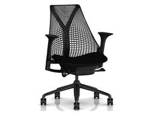
【本日みつけたお買い得品】ハーマンミラー「セイルチェア」が2万3,320円引き。Amazonセール
PC Watch
Amazonで、ハーマンミラーの「セイルチェア」が、9月28日の価格から2万3,320円引き(20%オフ)の9万3,280円で販売されている。
17時間前
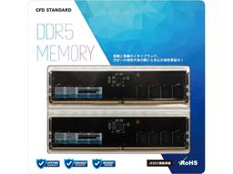
【本日みつけたお買い得品】32GBのDDR5メモリが1万4,409円引き！CFD製がAmazonでセール中
PC Watch
Amazonで、CFD販売の32GBメモリ「W5U4800CS-16G」が9月24日の価格から1万4,409円引き(18.4%オフ)の6万3,800円で販売されている。
17時間前
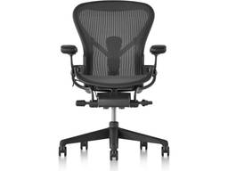
【本日みつけたお買い得品】アーロンチェアが5万円以上安く！Amazonセールで2サイズ同額
PC Watch
Amazonで、ハーマンミラーの高級チェア「アーロンチェア」のミディアムサイズが、9月28日の価格から4万5,107円引き(17.4%オフ)の21万4,720円で販売中だ。なお、スモールサイズは5万3,680円引き(20%オフ)で同額になっている。
17時間前
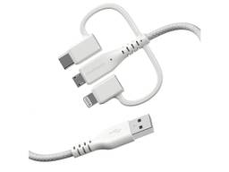
12万回の折り曲げに耐える1本3役の超タフケーブル、オウルテックから 1
1
PC Watch
オウルテックは10月2日、約12万回の折り曲げ試験をクリアしたとする3in1ケーブル「OWL-CBA6ABMシリーズ」を発売した。直販価格は3,180円。
20時間前

【今すぐ読みたい！人気記事】お荷物になってしまった240GB等の小SSDたち。実は“記憶域スペース”で大容量化可能。余ったSSDの有効活用方法とは - PC Watch 17
PC Watch
昔からSSDを使っている人なら、240GBクラスの小容量モデルを複数持て余していたりするかもしれない。USB接続の外付けケースと組み合わせて、ちょっとしたデータ保存用に使うのもよいが、ゲームのインストール目的だと容量不足感は否めない。
20時間前
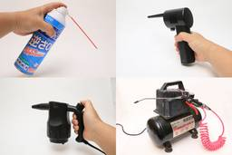
【今すぐ読みたい！人気記事】ガスと電動式のエアダスター対決。どちらが便利でコスパが高い？エアコンプレッサーも加えて戦わせてみた - PC Watch
PC Watch
毎年夏と年末になると気になるPCのホコリ。特に夏は「ホコリ」⇒「熱暴走」⇒「ブルースクリーン」のトラウマがよみがえり、恐怖心に駆り立てられCPUとGPUのヒートシンクや冷却ファン、電源ユニット内に溜まったホコリを、徹底的に掃除！掃除！掃除！
20時間前

メモリ64GB版「DGX Spark」登場。4,999ドルで、128GB版は値上げ 22
PC Watch
NVIDIAは10月2日(現地時間)、デスクトップAIコンピュータ「DGX Spark」のメモリ容量を64GBに抑えた「DGX Spark 64GB」を発表した。10月23日より発売し、価格は4,999ドル(約79万円)から。
1日前
またChatGPTがリセット、10月3日2時に。GPT-6.1 Sol動作遅延のお詫び 2
PC Watch
「明日リセットする」。OpenAIでCodexとChatGPTを担当するThibault Sottiaux(ティボー・ソティオ)氏が10月2日(日本時間)、X(旧Twitter)でこのように予告した。投稿の「明日」は米国時間10月2日を指し、日本時間では10月3日午前2時にあたる。
1日前
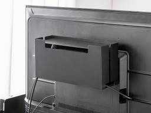
電源タップもSwitch 2も丸ごと隠す。VESA対応のスチール製ケーブルボックス 1
PC Watch
サンワサプライは、VESAマウント取り付けに対応するスチール製のケーブルボックス「200-CB073BK」と「200-CB075BK」を発売した。サイズが異なる仕様で、200-CB073BKは幅32cmで直販価格が3,480円、200-CB075BKは幅40cmで同3,980円。後者のみ12月上旬入荷予定となっている。
1日前

テキストを生成しない爆速AI「意思決定モデル」が続々。Clefなど3本まとめ 44
PC Watch
テキストを1トークンも生成せず、分類やルーティングといった判断だけを高速に返す「意思決定モデル」が、にわかに盛り上がりを見せている。Typesafe AIの「Jev」が火付け役となったこのジャンルに、互換モデルや対応実装が相次いで登場した。
1日前
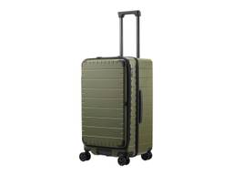
横に寝かせば簡易机、避難所でも使えるスーツケース「テオフィールド2」 1
PC Watch
エースは10月1日、同社が展開するバッグ&ラゲージブランドのace.(エース)から、フェーズフリー認証スーツケース「テオフィールド2」を発売した。直販価格は容量100Lモデルが5万8,300円、70Lモデルが4万9,500円、34Lモデルが4万2,900円。
1日前
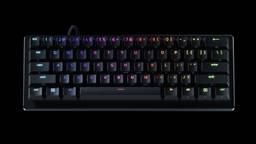
Razer、8Kポーリング/ラピッドトリガー対応の60%ゲーミングキーボード
PC Watch
Razerは10月1日、独自の光学式アナログスイッチを採用したコンパクトゲーミングキーボード「Razer Huntsman V3 Pro Mini 8KHz」を発表した。国内では10月中の発売を予定しており、価格は3万880円。
1日前
RTX Spark搭載Surface、10月7日に正式発表。ライブ配信も 2
PC Watch
米Microsoftは、Windows公式X(旧Twitter)アカウントにて、10月7日午前10時(太平洋時間、日本時間10月8日午前2時)に、WindowsおよびSurfaceに関するイベントを開催すると改めて告知した。投稿では、NVIDIAのSoC「RTX Spark」の公式アカウントもタグ付けされており、RTX Spark搭載製品の発表が見込まれる。イベントの模様はYouTubeでライブ配信される。
2日前

rootハッシュ漏洩の脅威。JITを狙うSpectre-v2新手法「BTR」とは 4
PC Watch
CPUの投機実行における脆弱性「Spectre-v2」の亜種である「Branch Target Reuse(BTR)」が報告された。アムステルダム自由大学のセキュリティ研究チームであるVUSecが9月29日に発表したもので、JIT(Just-in-Time)コンパイラに対して悪用することで、機密データの窃取などを可能にするとしている。
2日前

Qwen3.8-Flash-NextがゲーミングPCで爆速に動く「Strata」登場 61
PC Watch
総パラメータ125B(1,250億)、アクティブパラメータ6B(60億)の大規模モデルが、ビデオカード1枚のゲーミングPCで秒間60～95トークンの速度で動く。開発者のNiko1221氏は、Alibabaの大規模言語モデル「Qwen3.8-Flash-Next」をコンシューマ向けPCで高速に実行するための推論エンジン「Strata」をGitHubで公開している。ライセンスはMIT。
2日前
【本日みつけたお買い得品】松屋のハンバーグが1個190円！48食セットで3,699円引きセール中
PC Watch
Amazonにおいて、松屋のハンバーグ「鉄板焼きハンバーグ」が48食セットになった「松屋の鉄板焼きじゅわっとハンバーグ お得な48食」が段階的に値下げを続けており、現在は9月15日頃の価格から3,699円引きとなる9,101円で販売されている。1個あたりの価格は約190円で、販売はPremium Gourmet Tableが行なう。
2日前
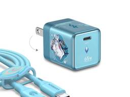
【本日みつけたお買い得品】「崩壊:スターレイル」爻光さんコラボのUSB充電器が約1,100円引き！
PC Watch
Amazonにおいて、UGREENがゲーム「崩壊:スターレイル」とコラボしたUSB充電器「UGREEN×崩壊:スターレイル【爻光限定モデル】 65W 超小型充電器」が、直近価格から1,146円引きとなる3,434円で販売されている。
2日前

Kindleラインナップ刷新！全モデルフラット前面で薄型化。2万9,980円から 3
PC Watch
電子書籍リーダーのKindleが、全モデル揃って段差のないフラットな前面デザインに生まれ変わった。Amazonは10月1日、Kindleシリーズ4モデルと子ども向け2モデルを刷新し、同日より順次発売する。価格は2万9,980円からで、発売日は以下の通り。
2日前
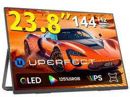
【本日みつけたお買い得品】デカすぎ？23.8型の大型モバイルモニターが約8,500円引きでセール中
PC Watch
Amazonにおいて、UPERFECTの23.8型液晶モバイルモニター「M238T01-S」が、直近価格から8,516円引きの2万4,680円で販売されている。価格は頻繁に乱高下しており、現在のセール価格で販売している期間が長めとなっている。
2日前
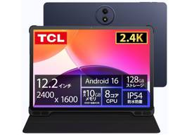
【本日みつけたお買い得品】12.2型のAndroidタブレット、Amazonで約4,500円引き 1
PC Watch
Amazonにおいて、TCLのAndroidタブレット「TCL TAB A1 Plus」が、10月12日までのクーポン適用で、現在価格から4,480円引きとなる4万320円で販売されている。
2日前